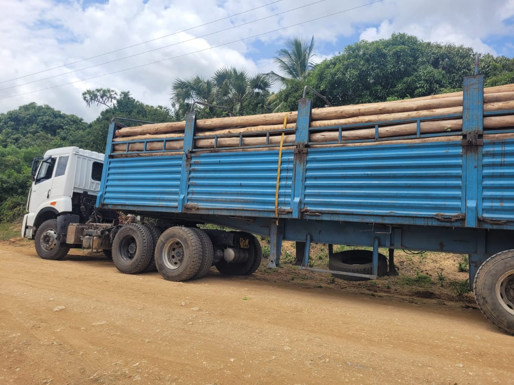
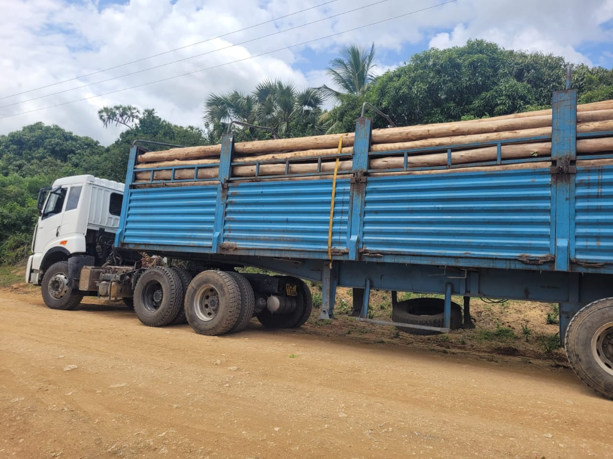

Welcome to Intrepids Treated Poles Ventures Ltd
| Fence Type | Price Range | Ideal For |
|---|---|---|
| ChainLink Fencing | Sh 300–500 Per metre |
Farms, Ranches, Livestock Enclosure |
| Barbed Wire Fencing | Sh 150–300 Per metre |
Farms, Homes, Schools, Compounds |
| Electric Fencing (High Tension) | Sh 700–1200 Per metre |
Wildlife-Prone Areas, Farms, Ranches |
 
